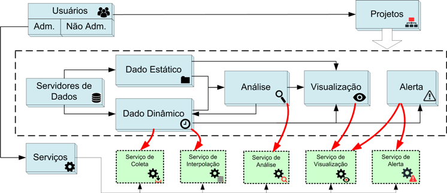
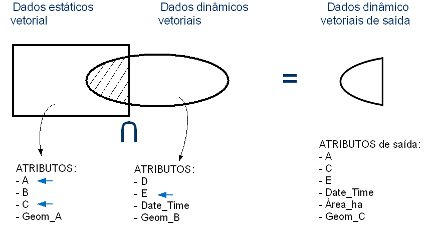
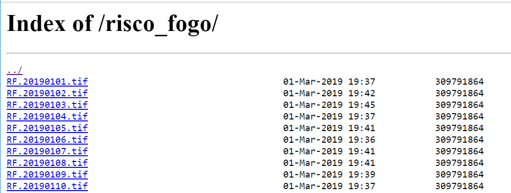
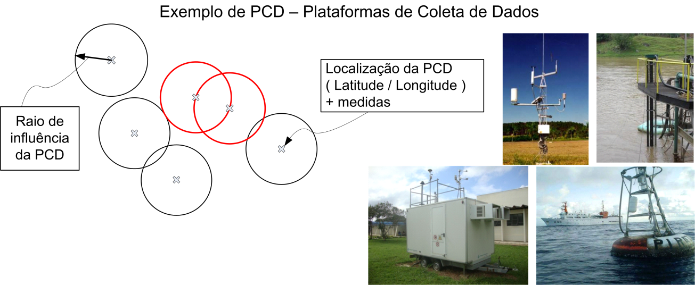

Análises
A plataforma TerraMA2 permite o desenvolvimento de análises integrando os dados dinâmicos ambientais (hidrometeorológicos, geotécnicos, etc) com dados estáticos vetoriais ou matriciais como grades numéricas. Uma análise envolve a escolha do tipo, dados de entrada, saídas e o mais importante um programa (“script”) para definir como será feita a integração dos dados. Os modelos de análise são escritos na linguagem Python integrado aos operadores espaciais criados especialmente para a plataforma.
Todos os tipos de análise produzem novos dados dinâmicos que podem ser reutilizados em outras análises (Figura 3.1). As análises são executadas automaticamente sempre que um dado novo foi coletado, manualmente, reprocessamento de dados históricos ou a intervalos de tempos pré-definidos pelo usuário. Resumidamente, temos que:
- Nome de análise é único para cada projeto do TerraMA2;
- Um usuário pode criar várias análises combinando os diversos dados;
- Uma análise deve pertencer a apenas um tipo com ícones associados quando a análise for baseada em objetos monitorados (
 ), baseada em matrizes (
), baseada em matrizes (  ) ou baseada em PCD (
) ou baseada em PCD (  ).
). - Uma análise utiliza dado dinâmico e estático para produzir novos dados dinâmicos;
- Para ver o resultado de uma análise, uma visualização deve ser definida;
- Um alerta poderá ser criado a partir do resultado de uma análise.


Figura 3.1 – Esquema de um projeto e relações com os serviços. Note que uma análise recebe dados dinâmicos e estáticos produzindo novos dados dinâmicos. O serviço de análise recebe e executa as tarefas.
No menu “Análises” o usuário pode criar e gerenciar os modelos de análise a serem aplicados aos dados para posterior geração de alertas. Descrevemos a seguir algumas algumas operações nesse menu que são comuns a qualquer dos tipos de análise.
ADICIONANDO UMA NOVA ANÁLISE:
Para adicionar uma nova análise no projeto ativo selecione “Análises” no menu de opções e na área de trabalho correspondente clique no botão “ + “ para adicionar. Após editar todos os campos necessários e o modelo de análise utilize o botão “Salvar” ou “Salvar e Executar” para salvar e executar a análise. Não é permitido nomes de análises em duplicidade. Botão “Cancelar” volta à tela anterior sem salvar a análise. Note que cada tipo de análise tem um ícone associado. Nesta área é possível selecionar uma análise para fazer alguma edição, criar uma nova ou ainda remover uma análise. Detalhes da adição de uma análise veja aqui.
CONSULTANDO E ALTERANDO ANÁLISE:
Para consultar e alterar as configurações de uma análise clique em “Análises” no menu de opções e na área de trabalho clique sobre o nome ou tipo de um item disponível. Após editar os campos desejados utilize o botão “Salvar” para salvar as alterações. Botão “Cancelar” volta à tela anterior sem salvar alterações.
FILTRANDO ITENS NA LISTA DE ANÁLISES:
Para filtrar itens na lista de análises clique em “Análises” no menu de opções. Na área de trabalho no campo texto “Digite para pesquisar” digite o texto desejado. Note que todas as colunas disponíveis são utilizadas no filtro. Utilize o botão “Avançado” para apresentar os botões referentes aos tipos de análises e escolher os que deverão fazer parte da lista. Por padrão todos os tipos estarão selecionados. O filtro digitado e o(os) botões de escolha do tipo de análise são combinados para apresentar os itens da lista.
IMPORTANDO UMA ANÁLISE:
Para importar a configuração de uma nova análise, selecione o botão Importar. Na parte superior da área de trabalho clique em “”. Na janela apresentada, localize o diretório onde a análise está salva. Escolha o arquivo “*.terrama2”, clique em abrir e selecione o projeto para qual deseja importar os dados.
EXPORTANDO UMA ANÁLISE:
Para exportar a configuração de uma análise utilize a opção do menu “Projetos”. Na frente do nome do projeto clique em “”. Na janela apresentada desmarque o botão a frente do nome do projeto e abra os itens em “Análises” com o botão “ + “. Marque ou desmarque o item desejado. Clique no botão “Exportar” para confirmar exportação dos itens marcados.
REMOVENDO UMA ANÁLISE:
Para remover uma análise de um projeto ativo clique no menu “Análises” para apresentar a lista de análises na área de trabalho. Na frente do nome da análise clique em “Remover”. Confirme a remoção na mensagem com “OK”.
Atenção: Ao remover uma análise, as visualizações e alertas associados também serão removidos. Neste caso, somente os metadados da análise serão removidos e não há opção de recuperar uma remoção. Já os dados gerados pela análise como grades e tabelas associadas a um objeto monitorado não serão removidos.
Created with the Personal Edition of HelpNDoc: Create help files for the Qt Help Framework